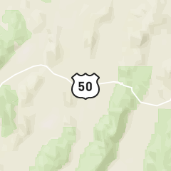

A Town Called Wonder

Published
by George Hess
For my brother and I, 1998 would bring about the end of an era, our own Wonder Years. We would soon be adults and life would put its proverbial pedal to the floor, blowing through a decade like a fifth grade summer break. In that final year, we shed the last of our childish layers searching for an old abandoned mining town appropriately named “Wonder”.
To the dismay of my mother, there is a long standing tradition for Hess boys to leave home on an adventure of self discovery. With the men of old this typically involved crossing an ocean or invading a foreign land and maybe even both. But in the late 20th century it took the form of an epic road trip. For my older brother Jake (class of '98), that time had come. He packed up a few belongings and drove off in his small, red, early 70s model, Ford Courier pickup. I, three years his younger, was sadly left at home… until I found a way to join up with him mid–odyssey en route to Mexico!
Our journey into Central America was certainly one for the books. This story, however, picks up on our reentry into the USA. Given the state of our unshowerdliness, either of us could have taken first prize for best drug–mule costume. Border patrol was giving us the fifth degree; one too many movies about white boys getting shanked in Mexican prisons had given me a healthy fear of Customs (and rusty switch blades for that matter). I was unable to produce a single word. Jake, on the other hand, elegantly talked our way through with skills he'd no doubt picked up from a similar interrogation at the Canadian border just weeks prior. He managed to flip the “conversation” into a proclamation of the love of Jesus Christ – which can create an uncomfortable climate for even the toughest of government brutes. The official turned and hurried away before my brother got the chance to make an alter call. Thanks be to Jesus we were allowed to pass!
Safe and sound on American soil we decided to add one more leg to our trip. A town called Wonder. Jake had heard that it was abandoned in the early 1900s after it went from boom to bust. He need not say more; it was ripe for exploring. Once again, Hollywood did its job and we were completely seduced by thoughts of saloons, spurs, and tumbleweed. So off into the sunset we road.
We had gathered a few souvenirs while in Mexico. Just the usual stuff: a generator, portable cement mixer, propane tank, etc… They barely all fit in the bed of the truck and everywhere we went, they followed. Like any good ghost town, Wonder was in the desert and our course took us to a particularly wide canyon. There was a very subtle, yet long downgrade on the road that led to the bridge. The extra cargo began to greatly increase our momentum. Before long we were redlining in fifth gear! My brother, not one for wasting brake pads, seized this opportunity to attempt a new land speed record. He shifted into neutral to lift the burden from the engine and all went quiet. We had commenced operation “Silent Steel” and continued to gain. All that could be heard was rubber on pavement, wind, and the semi–hysteric laughter of two teenagers growing hair on their chest. The speedometer had long since maxed out and I was fairly certain that a single pothole would send us airborne and straight to the bottom of the canyon, Wile E. Coyote style. I can only imagine what it must have looked like to see such a little truck, with so much junk in it, going so fast, and yet completely silent. It was the poor man's hybrid. We flew across the bridge and carried on our way to Wonder.
The longer we drove the sketchier our surroundings. We had already exited a highway affectionately deemed, The Loneliest Road in America, and then turned off that side road onto one made of dirt. As we continued down the way a small group of wild mangy looking horses kept pace with us for ten glorious seconds. That was just the sign we needed. Any doubts pertaining to the level of sanity surrounding our escapade galloped off with the herd. We were spellbound on ghost town! Deeper and deeper we pushed into the backcountry until our path suddenly ended at a roundabout. The only thing that resembled a trail continued up a very steep and rocky hill. Due to the impairing effects of our pony–racing–induced high, we hardly considered it a speed bump.
The uphill battle was quite fantastic with our tiny overloaded truck fishtailing its way along a near 45 degree angle of loose desert rock. We did not even make it halfway before getting a flat. Jake let the truck limp back down and our excitement deflated along with the tire upon surveying the damage. As if on queue, the rain and lightning set in. It poured the heavy kind of drops, the type that flash floods are made of. Jake got to work on the lug nuts and I kept a wary eye on the sky above. We were soaked and defeated. Hanging up our waterlogged pride we tipped our hats to Wonder (wherever it be) and took off in the direction we had come.
It couldn't have been more than two minutes before the spare blew. We exchanged a look of bewilderment and shrugged. What does one do when stricken with two flat tires? Elementary… proceed on one flat tire. And foolish me, I thought the dirt road couldn't get anymore bumpy. Jake kept a firm grip on the steering wheel and yelled over the immense rattling for me to check on the flat. I stretched my neck out of the window and got a face full of rubber. By deductive reasoning I was able to conclude, most assuredly, that the tire was near its end.
Still far from the highway, we were at least able to make it back to a civilized slab of pavement. It was getting dark but the rain had stopped and sporadic flashes of lightning lit our way. We pulled out the first flat and started walking, passing the tire back and forth ever so often.
Way, way up ahead we saw a pair of headlights approaching from the east. We were saved! If we picked up our pace a bit our paths would surely intersect. We kept an eye on the headlights and continued increasing our SPH (steps per hour) to ensure an interception, eventually ending up in a full on sprint, which looks absolutely ridiculous while attempting to carry a flat tire. We were jumping and waving our arms only to have the car pass by miles ahead. The incredible flatness of the desert had skewed our depth perception. It would take hours to get back to the intersection, and even then we'd still be stuck on The Loneliest Road in America.
Awhile later, we came across a full size pickup headed in the opposite direction. It was a woman and she was on her way to work. Surprised to find civilians this far in the bush, she explained that “work” was a military base and that our “lightning bolts” were actually bombs… yes, bombs, as in the things that jets drop. Out of a growing concern for the welfare of our vehicle, we asked about Wonder's proximity to the base. She had never heard of Wonder but told us not to worry about our truck; she'd tell the boys to keep any eye on it. The boys? I imagined a group of high ranking officers inside a dimly lit control room ordering a surveillance satellite to be repositioned over our cement mixer. We expressed our appreciation and kept walking. I will never forget the site of my brother's silhouette, backlit by a megaton of explosives. Eventually, that same woman picked us up on her return trip. She could only take us as far as the highway but we gladly welcomed the lift.
The first car approached and we stuck out our thumbs. They blew right past us and I don't blame them. Given the time and location, we were giving off a serious serial killer vibe. Jake suggested that we upgrade from the “psychotic hitchhiker's thumb” to the “stranded two handed wave”. That did the trick; the next vehicle stopped. We were lucky, or so we thought. This man too had never heard of Wonder but said we could ride in the back of his truck. He popped open the canopy to reveal a large collection of chainsaws and instructed us to get in. Oh how the tides had turned. Now he was the serial killer and we were the victims! If anything, it would buy us some time to play along lest he chop us up into pieces right then and there. Like sheep to the slaughter, we got in but there really wasn't anywhere to sit. The guy's blade fetish took up every square inch of the truck bed. I squatted the entire ride, for two reasons: 1) because the shocks were blown and I had to use my knees to keep from bouncing into any number of saws, and 2) so as to be prepared for a quick getaway once he returned to slay us. However, as our present condition testifies, he let us live and dropped us off at the cheapest motel in town.
The next day we patched up the tire. A few good Samaritans that were headed in roughly the same direction (who, mind you, had also never heard of Wonder), gave us a lift back to our truck. Relieved to find everything fully intact, we changed the flat and added its rubbery remains to our collection of souvenirs. Soon thereafter a new problem presented itself – money. The motel and tire patching had left us almost penniless and there was still a continental state or two separating us from home. We had to get creative with our cash. Almost everything went into gas for the truck. Whatever remained was used to purchase 39¢ cheeseburgers from McDonalds, or what you might call, gas for us. We slept on the ground at trail heads, we slept on the lawn at rest stops, bummed shower tokens from truckers, and just went with the wind. We survived on the bare minimum and we did it all on our own. It was incredibly validating.
Jake and I would go on to have many more adventures both foreign and domestic. But it would be our search for Wonder that remained the most defining. For when boys look into the face of danger, they see who they can become. And we liked what we saw.